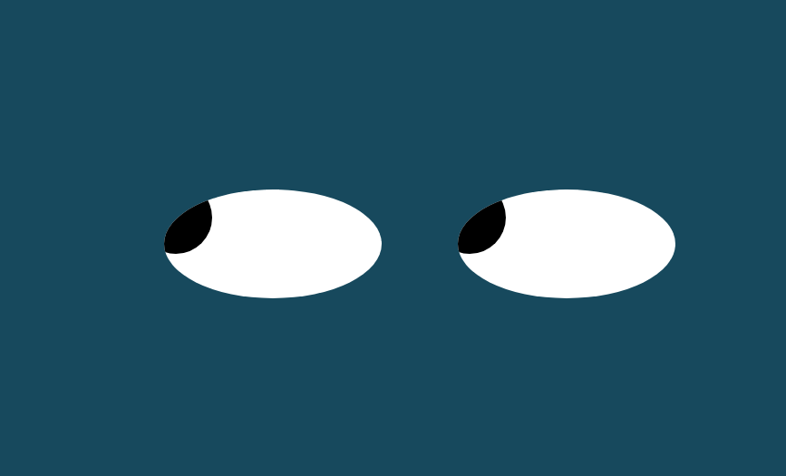
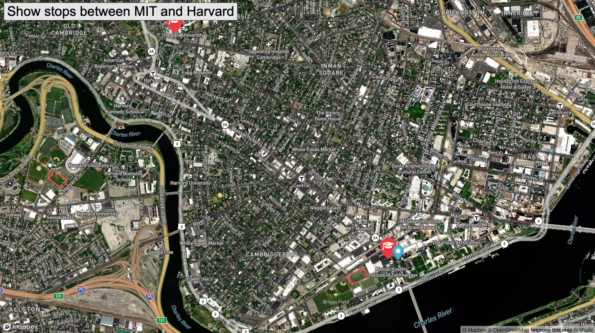

Pacman Factory
This program allows users to start the game and then add additional Pacmen on demand (html, javascript)
View Code
Eyes Spy
This mouse movement exercise creates two eyes which follow your every move of the mouse and uses javascript to set web styles. (CSS, (CSS, html, javascript, Mapbox)).
View Code
Real Time Bus Tracker
This program displays an interactive map with locations for bus stops between MIT and Harvard in Boston, Massachusetts and involves writing async functions to fetch data from multiple sources, rendering, building and manipulating maps on a web page. (CSS, html, javascript, Mapbox)
View Code